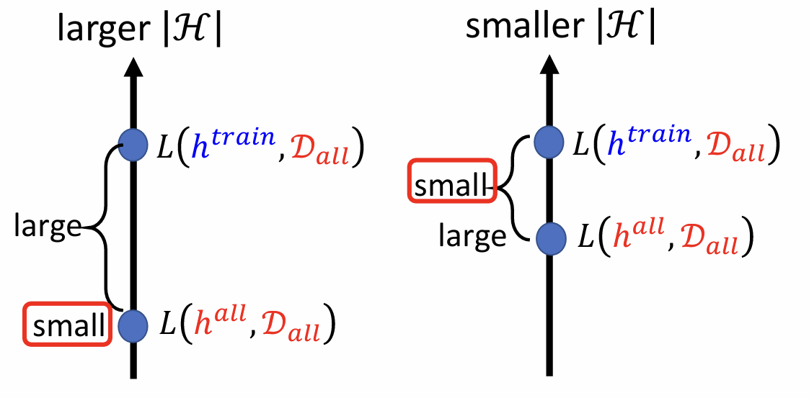

在train的过程中，如果我们能拿到世界上所有的data（记作$D_{all}$），那么在方法合适的情况下，自然就能train出一组最佳参数（记作$h^{all}$）：
但问题在于我们无法获取$D_{all}$，只能获取部分数据$D_{train}={(x^1,\hat{y}^1),(x^2,\hat{y}^2),…,(x^N,\hat{y}^N)}$，其中$(x^n,\hat{y}^n)~D_{all}$。这里我们假设$(x^n,\hat{y}^n)$是independently and identically distributed（i.i.d)。那么我们可以得到一组参数：
我们希望$L(h^{train},D_{all})$接近于$L(h^{all},D_{all})$（在$D_{all}$上，$L(h^{all},D_{all})$一定是所有$h$中最小的）。
那么我们可以把目标记作：
什么样的$D_{train}$训练出的$h^{train}$满足这个目标呢？答案是：
其中|ℋ|=number of candidate functions (model “complexity”)
证明
根据上式结论，有：
而：
联立以上两式：
我们将$\frac{\sigma}{2}$记作ε，得：
那么sample出bad $D_{train}$的probability是多少呢？
如果一个$D_{train}$是bad的，那么至少有一个$h$使得$|L(h,D_{train})-L(h,D_{all})|> ε$。因此：
根据Hoeffding’s Inequality（在$L∈[0,1]$的情况下）：
其中$N$是$D_{train}$种的样本数量。
而$2exp(-2Nε^2)$和$h$没有关系，因此$\sum\limits_{h∈ℋ}2exp(-2Nε^2)=|ℋ|2exp(-2Nε^2)$
那么最终得到：
综上所述，就得到了降低sample到bad$ D_{train}$的概率的方法：
- 增大N；
- 减小ℋ。
还有一个问题就是|ℋ|如何计算。解决方法是使用VC-dimension，这里不进行过多展开。
下面我们要面临的是ℋ如何选择的问题：
- 当选择一个小的ℋ时，Model得到的Loss会很大，但$L(h^{train},D_{all})$和$L(h^{all},D_{all})$会很接近；
- 当选择一个大的ℋ时，Model得到的Loss较小，但$L(h^{train},D_{all})$和$L(h^{all},D_{all})$会相差较大；

后面的课程会讲解鱼与熊掌兼得的方法。